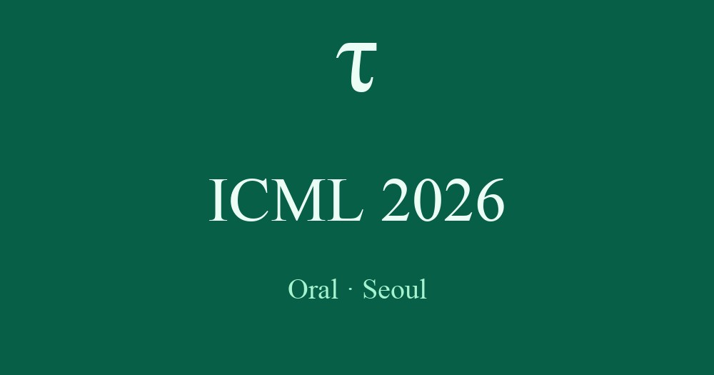
Jul 2026
Presented the τ-benchmark suite at ICML 2026 (Seoul) — τ²-Bench as an Oral (top 0.7% of ~24,000 submissions), τ-Voice and τ-Knowledge as posters.
AI Research, Sierra
sohamray19 <at> gmail <dot> com · Resume · GitHub · Google Scholar · LinkedIn · X
Hey, I'm Soham.
I'm a research engineer at Sierra with over seven years in ML research, specializing in task-oriented dialogue. I lead voice-agent benchmarking — from ASR evaluation (μ-Bench) to audio-native agents (τ-voice) — and earlier co-built τ²-Bench, our text-agent benchmark. All three are used by leading labs (OpenAI, Google, Anthropic, xAI, Moonshot) to measure modelling progress in complex, real-world conditions. I've been fortunate to learn from Dr. Victor Barres and Dr. Karthik Narasimhan (Princeton) along the way.
Prior to Sierra, I spent three and a half years at ASAPP under Dr. Kilian Weinberger (Cornell) and Dr. SRK Branavan, applying LLMs and NLP to customer service problems and shipping research into production. I hold a master's in Computer Science from Cornell.
I excel in environments with high agency, quick iteration, and fast adoption.
I'm married to the inspiring Aashna Banerjee, and we live in San Francisco. If you're ever in San Francisco and up for a boba or a game of squash, let me know.

Presented the τ-benchmark suite at ICML 2026 (Seoul) — τ²-Bench as an Oral (top 0.7% of ~24,000 submissions), τ-Voice and τ-Knowledge as posters.
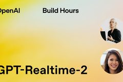
Featured in OpenAI's Build Hour: GPT-Realtime-2, presenting τ-voice findings.
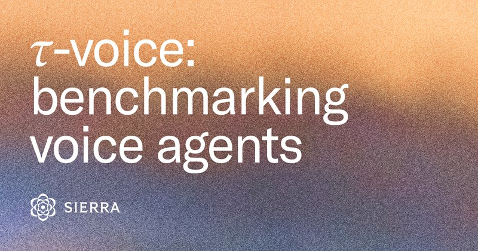
Released τ-voice, the first benchmark for full-duplex voice agents on real customer-service tasks.

xAI announced Grok Voice Think Fast 1.0 — top spot on the τ-voice leaderboard (418M views).
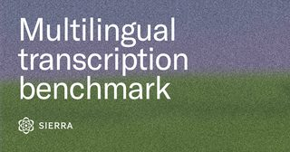
Released μ-Bench, an open multilingual transcription benchmark across 5 locales.
GPT-5 launched by OpenAI, with τ²-Bench featured in the announcement; scored 96.7% on τ²-Bench telecom.
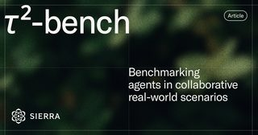
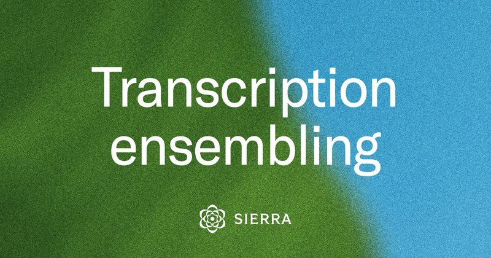

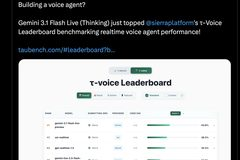
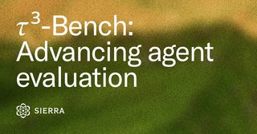

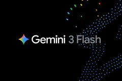
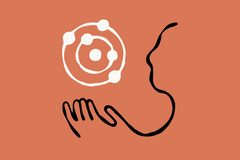
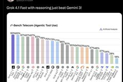
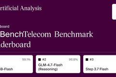
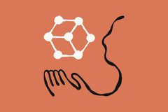

★ highlight
Presenting τ-voice findings at OpenAI's Build Hour: GPT-Realtime-2 · May 2026
A Tau Day essay, three versions in: a benchmark is a strong opinion about what matters, made measurable — τ's opinion is production realism in task-oriented dialogue.
Sierra's transcription stack dynamically routes across providers, supports 70+ languages, and ensembles outputs to cut utterance error rate by ~25%.
The first benchmark to combine grounded customer-service tasks with full-duplex voice under realistic conditions — diverse accents, noise, and turn-taking.
Open multilingual transcription benchmark across 5 locales, with a new metric (UER) that isolates meaning-changing errors from surface-level ones.
Expands τ-bench to two new frontiers — knowledge retrieval over 698 policy documents, and live full-duplex voice with realistic audio conditions.
How Sierra builds voice agents across 34+ languages and dialects — combining human evaluation, automated benchmarking, and local language experts.
A dual-control benchmark where users and agents share the action space. Top LLMs drop up to 25 points moving from solo to interactive mode.